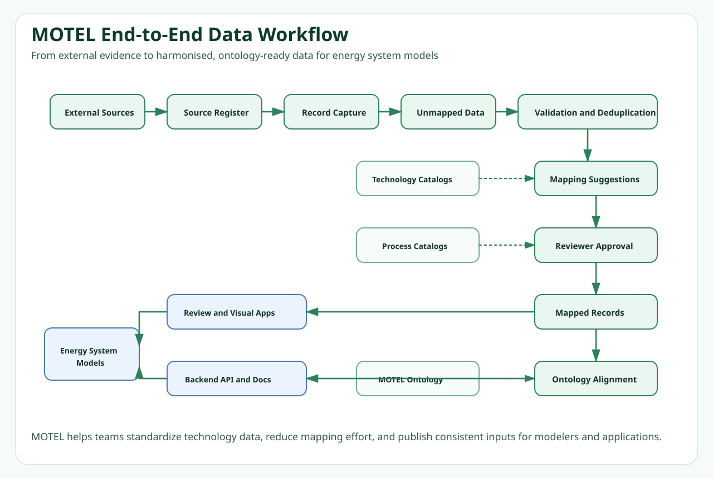

Traceable parameters
Technology values stay connected to source references, assumptions, and harmonisation history.
MOTEL Platform
MOTEL provides a reproducible workflow for preparing, harmonising, documenting, and reusing technology data in energy system models, while creating a clean handoff into ontology, graph database, API, and web application layers.
Energy system models rely on many technology assumptions such as CAPEX, efficiency, lifetime, emissions factors, and carrier relations. Those assumptions are often buried in spreadsheets or model-specific files, which makes them hard to trace, compare, and reuse. MOTEL addresses that by introducing a structured workflow for turning raw technology information into harmonised, provenance-aware, and ontology-ready data.
Technology values stay connected to source references, assumptions, and harmonisation history.
Shared schemas, controlled vocabularies, and linked entities make the data easier to compare across studies and tools.
Structured MOTEL outputs can feed a downstream ontology, GraphDB, backend API, and web interface.
The MOTEL workflow connects data preparation with semantic representation and model-ready export.

The current repository focuses on the implemented data-preparation core. A second repository carries the ontology, GraphDB, backend, and frontend stack.
motel-platform/
|-- 1_ingest/ source-specific ingestion notebooks and helpers
|-- 2_harmonise/ harmonisation notebooks and helper functions
|-- motel-db/ unmapped data, registries, mappings, and linked outputs
|-- schema/ machine-readable data schemas
|-- schema_simple/ human-readable schema blueprints
`-- docs/ GitHub Pages documentation and workflow figuresThe current public repository demonstrates how a selected set of technologies can be ingested, harmonised, linked to structured MOTEL entities, and prepared for downstream ontology and graph workflows.
A harmonised MOTEL record can connect a technology, its parameters, units, source references, and ontology-ready identifiers in one inspectable structure.
technology:
id: heat_pump
label: Heat pump
type: EnergyConverter
parameters:
- id: heat_pump_capex
label: CAPEX
value: 1200
unit: CHF/kW
source_id: SRC_001
ontology_class: dici_onto:CAPEX
- id: heat_pump_lifetime
label: Lifetime
value: 25
unit: years
source_id: SRC_001
ontology_class: dici_onto:LifetimeThe downstream MOTEL ontology repository turns harmonised MOTEL data into ontology-based TTL files, loads them into GraphDB, serves them through a backend API, and exposes them in a web interface for exploration.
Heat pump
-> hasAttribute
-> CAPEX
-> hasValue
-> 1200 CHF/kW
-> wasDerivedFrom
-> Source recordIn the separate downstream stack, the MOTEL webapp is intended to let users browse technologies, inspect parameters and provenance, adapt selected values, and export model-ready configuration files.
This repository can be explored locally with the notebook-based ingestion and harmonisation workflow. The downstream ontology, KG, backend, and frontend stack runs from a separate repository.
git clone https://github.com/BartonChenTW/motel-platform
cd motel-platform
python -m venv .venv
# Windows PowerShell:
# .\.venv\Scripts\Activate.ps1
pip install -r requirements.txtThen open the Step 1 and Step 2 notebooks locally in Jupyter or VS Code:
1_ingest/1_data_ingestion.ipynb2_harmonise/2_data_harmonisation.ipynbThis project was supported by the Open Research Data Program of the ETH Board.
Developed by Empa Urban Energy Systems Lab in collaboration with ETH Energy Science Center.